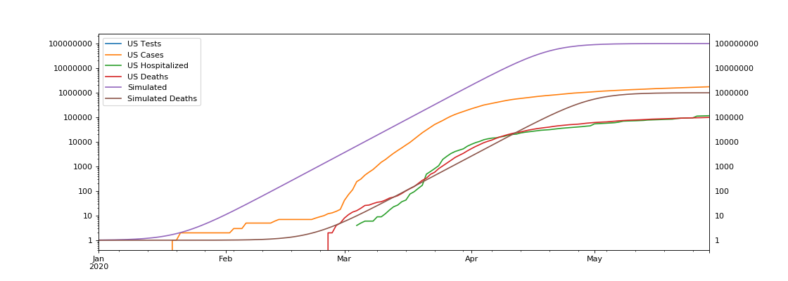
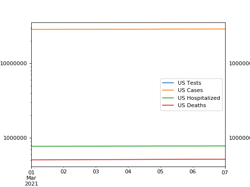
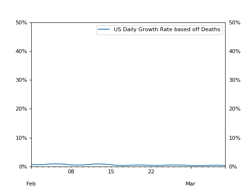
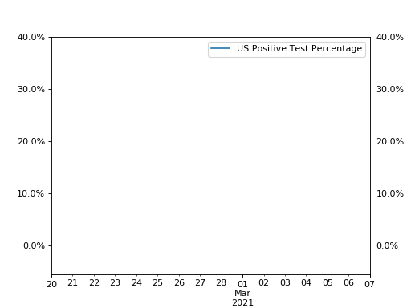
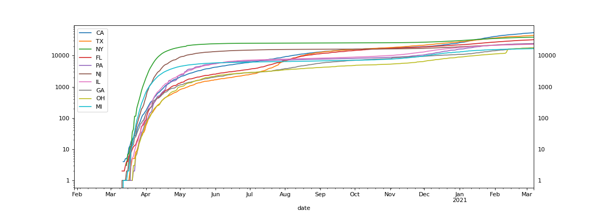

Cold hard data on COVID-19 in the USA presented in shiny graphs. Data courtesy of The COVID Tracking Project.
USA Overview
COVID-19 in the USA on a logarithmic scale. A logarithmic scale will show exponential growth as a straight line. The simulated curves are for reference and assume 100 Mil cases (~30% of population) and 1 Mil deaths (1% fatality rate). The simulated curves were calibrated with the actual number of deaths as of Mar 22, 2020.

Below is a closer look at the same data over the course of last week.

Growth Rate
The growth ratio below is based off the number of deaths. This is the ratio between the total # of deaths today versus yesterday. Deaths are the most reliable statistic. The number of reported cases depends on how much testing is being done and are being undercounted with varying degree.

Testing
Testing is essential for bringing an outbreak under control. The graph below shows the percentage of tests that come back positive. This is an indirect indicator whether there is sufficient testing being done. In countries that have the outbreak under control the number of positives is about 5%. A higher positive test rate basically means that only the most severe/obvious cases are being tested and that the testing will not be very effective in preventing further spread.
Results by State
Different States within the USA are impacted in different ways. The population density and local government response will impact growth rates. The graph below shows the "Top Ten" US states with highest growth rates. Only states with more than 5 deaths as of last week are included.
West Coast
Number of deaths for the 3 west coast states.